Week 03 — Offline · AI × Industrial Design
PRODUCT DETAIL
& CMF
From Refined Concept to Product Definition
제품의 형태를 결정했다면,
이제 소재와 디테일을 구체적으로 정의할 차례입니다.
PART 01 — Refined Concept Review
Three Weeks, One Product
FROM CONCEPT TO DEFINITION

WEEK 01
IDEA → SKETCH → CONCEPT
러프 스케치에서 콘셉트로
→
WEEK 02
REVIEW → REVISE → REFINE
검토하고 수정해 Refined Concept로
→
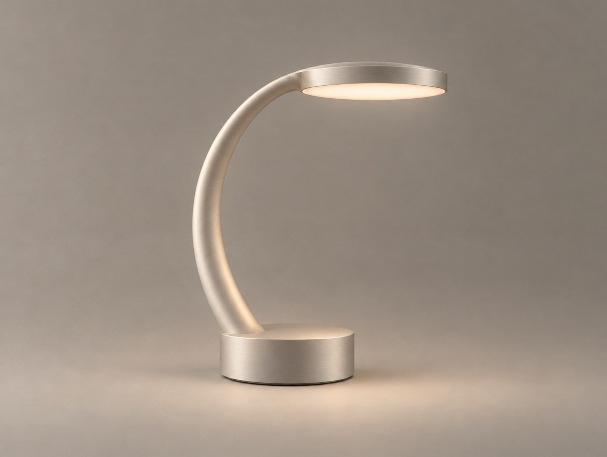
WEEK 03
CMF → DETAIL → CONSISTENCY
같은 제품의 소재와 디테일을 구체화
1~2주차에는 제품의 형태를 발전시켰습니다. 3주차에는 같은 제품의 소재와 디테일을 구체화합니다.
2
PART 01 — Refined Concept Review
Refined vs. Defined
REFINED DOES NOT MEAN DEFINED
1
2
3
4
5
6
01
본체의 정확한 소재는 무엇인가?
02
무광과 새틴 중 어떤 마감을 사용할 것인가?
03
전원 버튼은 어디에 위치하는가?
04
충전 방식은 무엇인가?
05
지지대와 베이스는 어떻게 연결되는가?
06
후면 구조는 어떻게 구성되는가?
AI로 만든 제품 이미지가 완성되어 보여도 실제 디자인 결정이 끝난 것은 아닙니다.
3
PART 01 — Refined Concept Review
Open Questions
WHAT IS STILL UNDEFINED?
FORM
형태와 비율
CMF
색상, 소재, 표면 마감
DETAIL
버튼, 연결부, 부품 경계
MULTI-VIEW
앞·옆·뒤의 형태
VISUALIZATION
제품을 어떤 이미지로 보여줄 것인가?
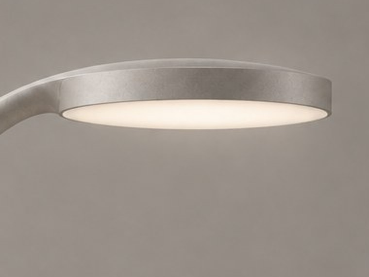
헤드 · 원본 확대
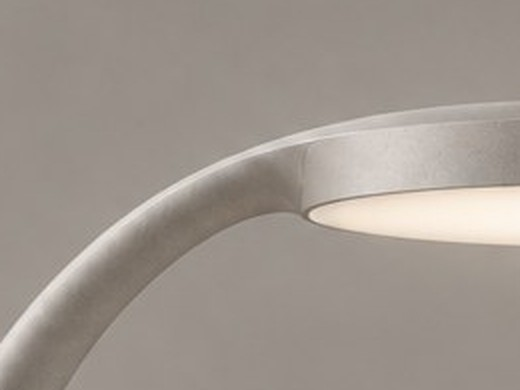
헤드 연결부 · 원본 확대
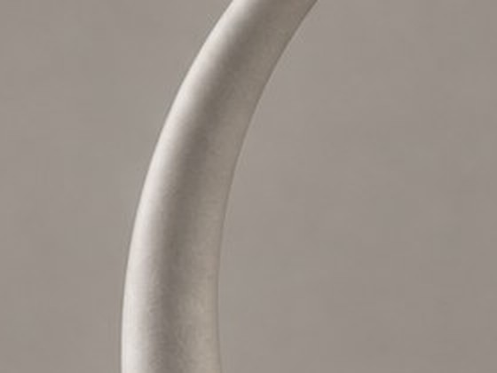
지지대 · 원본 확대
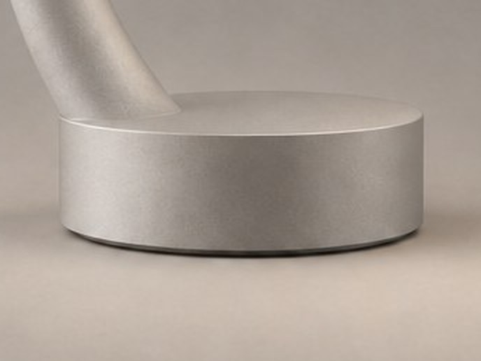
베이스 · 원본 확대
강사 질문
"이 제품에서 실제로 설계된 부분과 AI가 임의로 표현한 부분은 무엇일까요?"
4
PART 01 — Refined Concept Review
Form First
LOCK THE FORM
얇은 원형 헤드
낮고 넓은 원통형 베이스
C자형 지지대
유지할 특징
01
C자형 지지대
02
낮고 넓은 원통형 베이스
03
얇은 원형 조명 헤드
04
지지대와 헤드의 상대적 위치
05
전체적인 실루엣과 비율
형태가 계속 바뀌면 소재와 디테일을 정확하게 비교할 수 없습니다.
5
Practice 01
Final Form Review
이후 작업의 기준이 될 제품 형태를 확정합니다.
수행 단계
1. 2주차 Refined Concept 확인
2. 기준 제품 이미지 선정
3. 반드시 유지할 형태 3개 작성
4. 아직 정의되지 않은 디테일 표시
5. 이번 주에 결정할 디자인 항목 선정
결과물
Final Form Reference
완료 기준
이후 CMF와 디테일 설계에 사용할
기준 이미지가 확정되어 있음
6
PART 02 — CMF Design
What Is CMF
COLOR · MATERIAL · FINISH
COLOR
제품의 시각적 인상과 인지
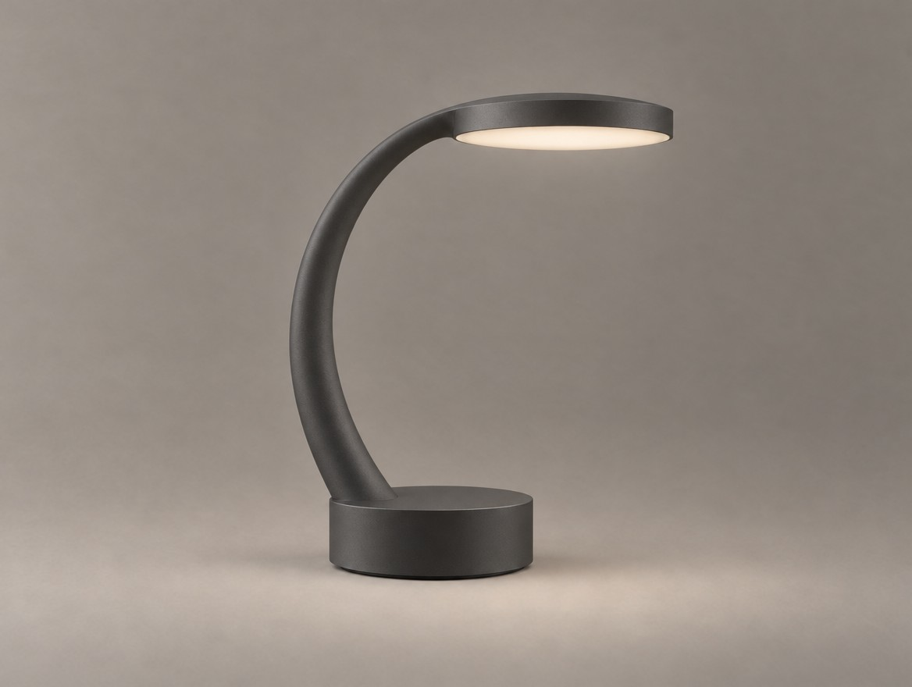
MATERIAL
제품의 물리적 특성과 사용 경험
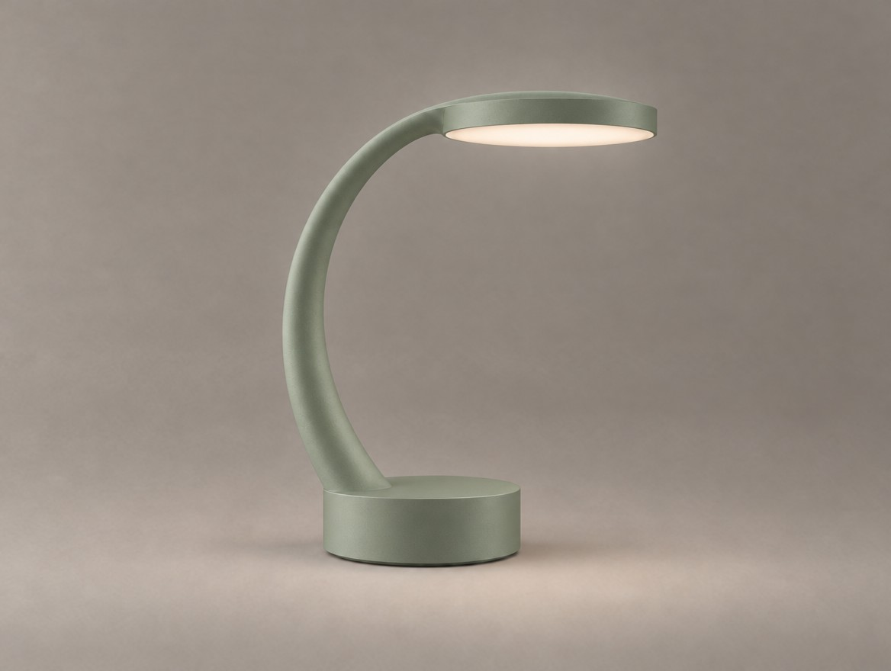
FINISH
표면의 질감과 반사 특성
CMF는 제품의 외관뿐 아니라 사용 경험과 관리 방식에도 영향을 줍니다.
7
PART 02 — CMF Design
Color Study
COLOR DEFINES PERCEPTION
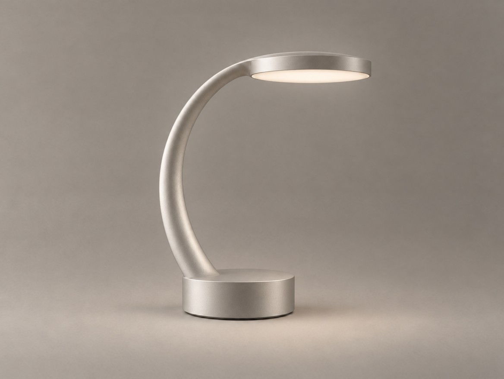
A · WARM SILVER
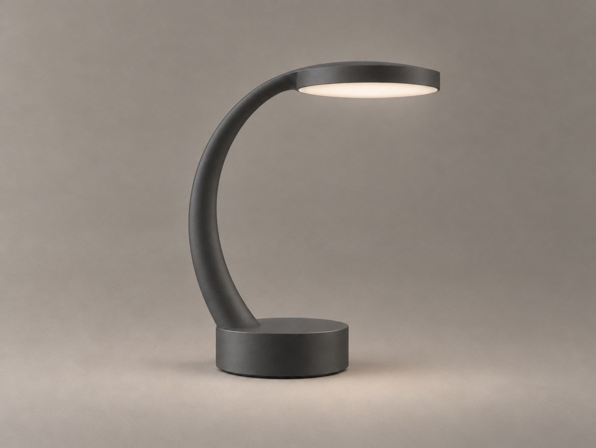
B · CHARCOAL GRAY
C · MUTED SAGE GREEN
색상이 영향을 주는 것
01
제품의 분위기
02
사용 환경과의 조화
03
브랜드 정체성
04
조작부의 시인성
05
사용자가 인식하는 무게감
형태와 조명은 그대로 두고 색상만 바꿨습니다. 같은 제품도 색상에 따라 무게감과 어울리는 공간이 달라집니다.
질문
"세 가지 중 침실 협탁에 가장 잘 어울리는 것은? 그 이유는?"
8
PART 02 — CMF Design
Material Choice
MATERIAL IS A DESIGN DECISION
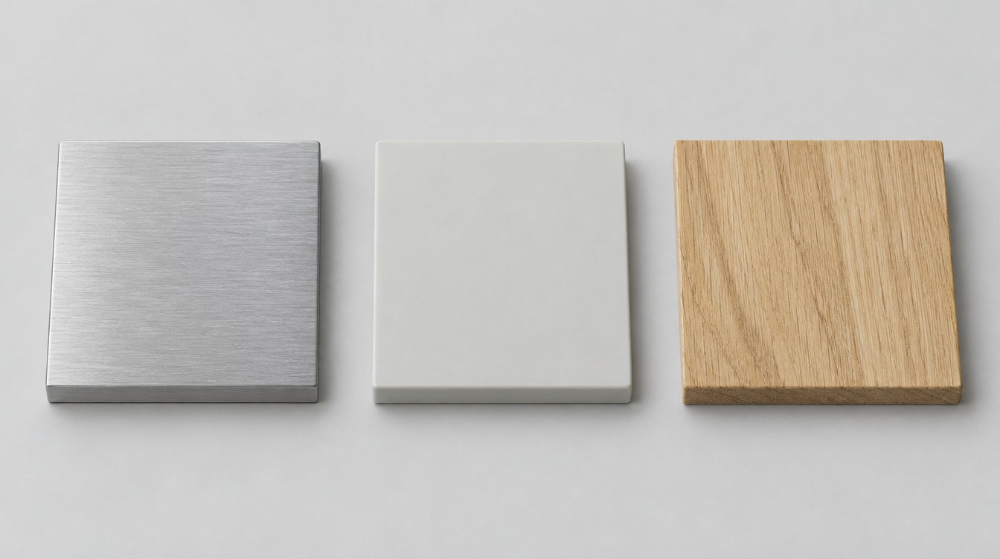
ALUMINUM
금속성 표면과 가공 특성
ABS PLASTIC
성형 자유도와 다양한 표면 표현
WOOD
자연스러운 질감과 촉감
고려할 요소
무게 · 강도와 내구성 · 가공 방식
촉감 · 유지관리 · 사용 환경 · 생산 비용
소재를 바꾸면 보이는 것뿐 아니라 무게, 촉감, 만드는 방법이 함께 바뀝니다.
9
PART 02 — CMF Design
Part by Part
MATERIAL APPLICATION
조명 헤드 외장
조명 확산판
C자형 지지대
원통형 베이스
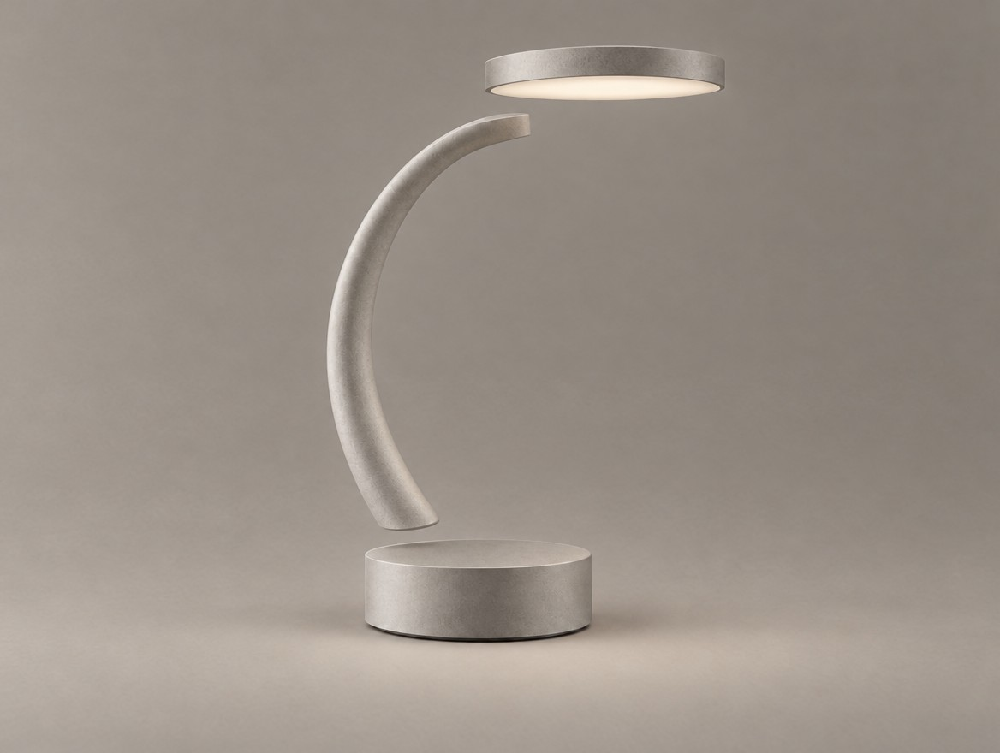
CONCEPTUAL · 개념 이미지
기존 램프
베이스 · 지지대 · 헤드 외장 · 확산판
추가 설계
전원 버튼 · 충전 포트 주변부 · 미끄럼 방지 패드
소재는 제품 전체가 아니라 부품의 역할에 맞게 결정합니다.
10
PART 02 — CMF Design
Finish Study
FINISH CHANGES THE EXPERIENCE
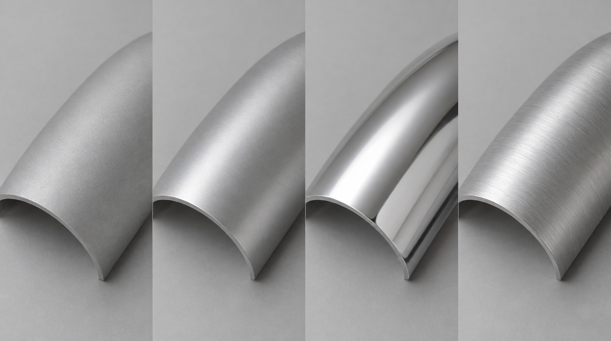
MATTE
반사가 적고 차분한 표면
SATIN
은은한 반사와 부드러운 광택
GLOSSY
강한 반사와 선명한 하이라이트
BRUSHED
방향성이 있는 표면 결
같은 소재라도 마감에 따라 전혀 다른 인상을 줍니다.
11
PART 02 — CMF Design
Context of Use
CMF & USER EXPERIENCE
손으로 자주 만지는 곳
빛이 반사되는 면
지문·오염이 보이는 곡면
01
손으로 자주 만지는 제품인가?
02
지문과 오염이 쉽게 드러나는가?
03
표면이 미끄럽지는 않은가?
04
빛이 표면에 어떻게 반사되는가?
05
사용 공간과 어울리는가?
06
관리하기 쉬운 소재인가?
강사 질문
"이 램프가 침실에서 사용된다면 어떤 CMF가 적합할까요?"
12
PART 02 — CMF Design
Two Directions
CMF DIRECTION A / B
A — SOFT & WARM
Warm Silver / Satin Aluminum / Frosted Diffuser
B — CALM & TECHNICAL
Charcoal / Matte Aluminum / Frosted Diffuser
13
PART 02 — CMF Design
Decision Criteria
CMF DECISION CRITERIA
01
제품의 목적과 일치하는가?
02
타깃 사용자에게 적합한가?
03
사용 환경에 어울리는가?
04
소재와 마감의 조합이 자연스러운가?
05
관리와 사용성을 고려했는가?
06
제품의 디자인 정체성을 유지하는가?
예: A안을 고른다면 여섯 기준 각각에 한 줄씩 이유를 적는다.
CMF 선택에는 명확한 근거가 필요합니다. "예뻐서"는 근거가 아닙니다.
14
Practice 02
CMF Direction
자신의 제품에 맞는 CMF를 근거와 함께 결정합니다.
수행 단계
1. CMF 방향 2개 구성
2. 각 방향의 Color / Material / Finish 정의
3. 부품별 소재와 마감 지정
4. 사용 환경과 디자인 목표로 비교
5. 최종 CMF 선택 및 이유 작성
결과물
CMF Direction Sheet
완료 기준
제품의 각 부품에 적용할
색상 · 소재 · 마감을
구체적으로 설명할 수 있음
15
PART 03 — Product Detail Design
Details Matter
DESIGN IS IN THE DETAILS
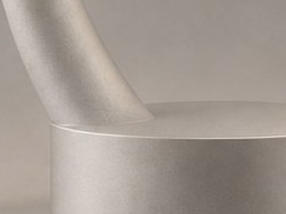
베이스와 지지대 연결
지지대와 헤드 연결
헤드 가장자리
디테일 요소
부품의 연결 방식
조작부의 위치
모서리의 곡률
소재가 만나는 경계
부품 분할선
부품 간 간격
전체 형태가 같더라도 디테일에 따라 완성도가 달라집니다.
16
PART 03 — Product Detail Design
Housing Seams
PARTING LINE
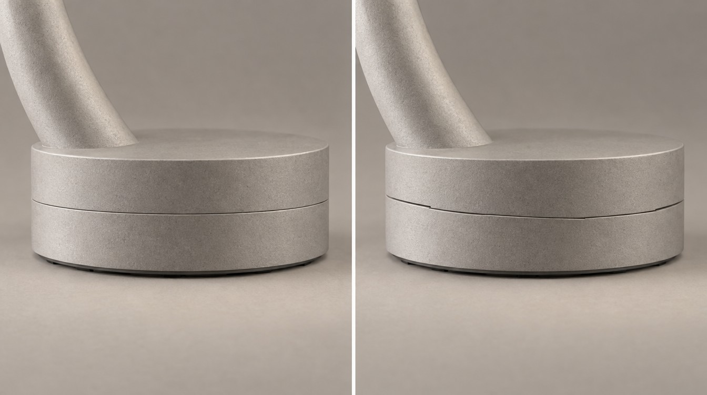
DESIGN PROPOSAL · 설계 제안
A · 정확하고 좁은 분할선
B · 어긋나고 고르지 않은 분할선
01
부품이 나뉘는 이유
02
경계선의 위치
03
경계선이 외관에 미치는 영향
04
소재 변경과의 관계
05
제조·조립 방식에 따른 고려사항
주의
원본에서 실제 분할선은 확인되지 않습니다. 두 이미지는 설계 제안입니다.
17
PART 03 — Product Detail Design
Connections
JOINT & CONNECTION
01 · BASE CONNECTION
C자형 지지대와 원통형 베이스
02 · HEAD CONNECTION
C자형 지지대와 원형 조명 헤드
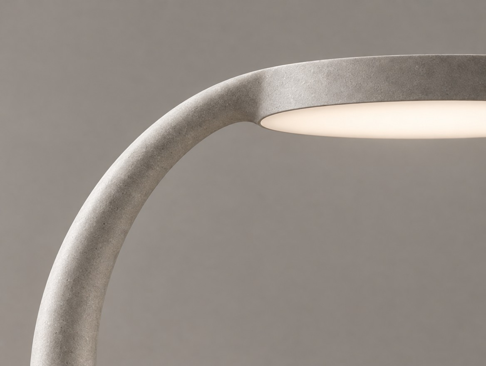
기존 연결부 확대 · 새 힌지나 나사를 추가하지 않음
검토할 사항
형태적 연속성 · 하중이 전달되는 방향 · 고정 또는 회전 구조의 필요성 · 시각적 완성도
AI 이미지에서 자연스럽게 보이는 연결부가 실제로 구현 가능한 구조라는 의미는 아닙니다.
18
PART 03 — Product Detail Design
Touch Points
INTERFACE & CONTROLS
A
B
C
원본 확대 + 버튼 위치 후보(A·B·C) 표시 · 버튼은 아직 없음
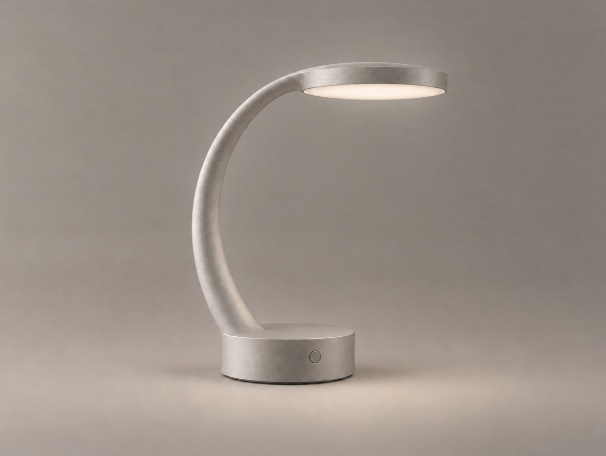
DESIGN PROPOSAL · 설계 제안
제안 예: 베이스 정면의 작은 원형 버튼
정의할 요소
전원 버튼
밝기 조절 방식
충전 방식 · 충전 포트
상태 표시등
터치 조작부
학생 질문
"이 램프를 켜고 끌 때 사용자는 어디를 만져야 할까요?"
19
PART 03 — Product Detail Design
Edge Study
EDGE & RADIUS
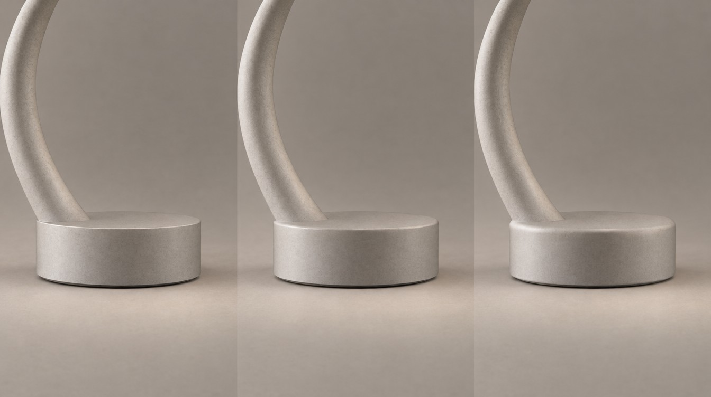
DESIGN PROPOSAL · 설계 제안
SHARP EDGE
정제되고 날카로운 인상
SMALL RADIUS
단정하고 부드러운 인상
LARGE RADIUS
친근하고 유기적인 인상
20
PART 03 — Product Detail Design
Where Materials Meet
MATERIAL TRANSITION
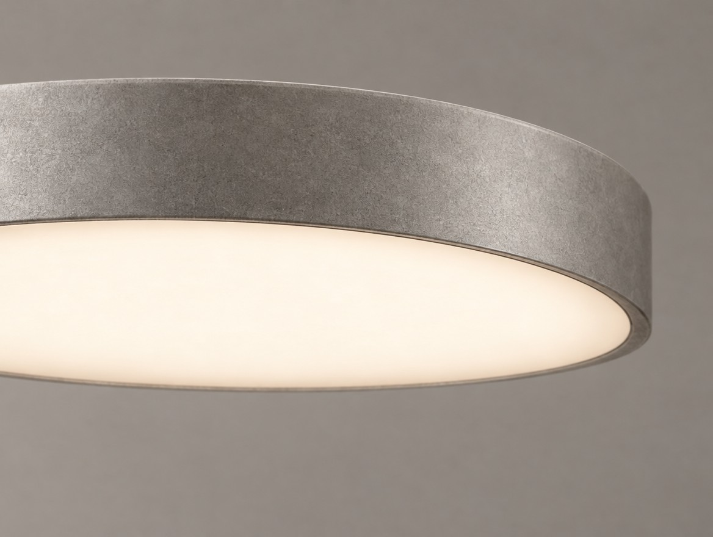
기존 램프의 대표 영역
조명 헤드의 금속성 외장
헤드 하단의 확산판
검토 기준
01
소재 경계가 자연스러운가?
02
부품 간 간격이 일관적인가?
03
소재의 특성이 잘 드러나는가?
04
제품의 디자인 언어와 일치하는가?
21
PART 03 — Product Detail Design
One Design Language
DETAIL CONSISTENCY
기존 램프의 디자인 특징
부드러운 곡선 · 단순한 기하학적 형태 · 장식이 없는 표면
얇은 헤드 · 자연스럽게 이어지는 지지대
검토 질문
01
버튼도 같은 디자인 언어를 사용하는가?
02
모서리 곡률이 제품 전체와 어울리는가?
03
부품 경계가 지나치게 복잡하지 않은가?
04
추가된 디테일이 미니멀한 인상을 해치지 않는가?
디테일은 따로 디자인하지 않습니다. 제품 전체의 언어 안에서 결정합니다.
22
PART 03 — Product Detail Design
Key Details
DETAIL DEFINITION SHEET
1
2
3
DETAIL 01
지지대와 헤드 연결부
위치 · 역할 · 형태
소재 · 사용 방식
유지해야 할 특징
DETAIL 02
전원 버튼 위치 및 형태
위치 · 역할 · 형태
소재 · 사용 방식
유지해야 할 특징
DETAIL 03
베이스의 부품 경계
위치 · 역할 · 형태
소재 · 사용 방식
유지해야 할 특징
각 디테일마다 위치 · 역할 · 형태 · 소재 · 사용 방식 · 유지해야 할 특징을 기록합니다.
23
PART 03 — Product Detail Design
Sketch the Decision
DETAIL SKETCHING
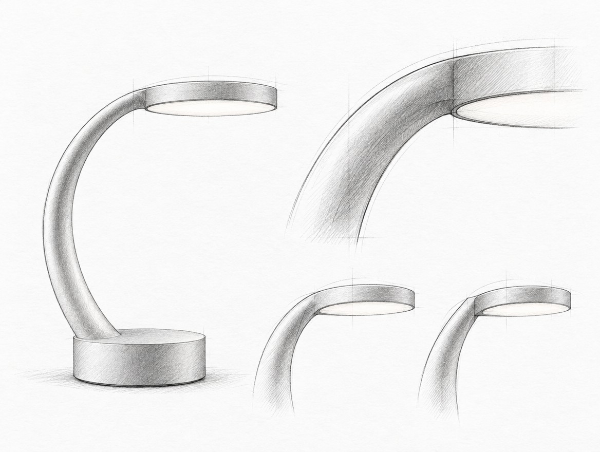
스케치에 포함할 내용
01
기존 형태
02
수정 또는 추가할 디테일
03
부품 간 관계
04
사용 방식
05
소재 적용 위치
완성도 높은 그림보다 디자인 의도가 명확한 스케치가 중요합니다.
24
Practice 03
Detail Definition
전체 이미지에서는 보이지 않는 핵심 디테일을 정의합니다.
수행 단계
1. 중요한 디테일 3개 선정
2. 각 디테일의 역할과 위치 작성
3. 확대 스케치 제작
4. 적용 소재와 마감 지정
5. AI 시각화에서 유지할 특징 정리
결과물
Detail Definition Sheet
완료 기준
제품 전체 이미지에서 확인하기
어려운 핵심 디테일이
구체적으로 정의되어 있음
25
PART 04 — Multi-view Design
Views
ONE PRODUCT, MULTIPLE VIEWS
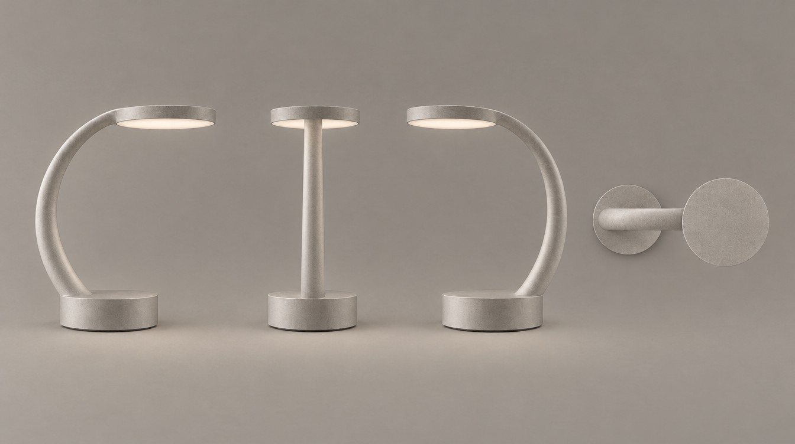
하나의 제품, 다섯 시점
FRONT VIEW
SIDE VIEW
REAR VIEW
TOP VIEW
THREE-QUARTER VIEW
시점이 달라져도 제품 자체가 달라져서는 안 됩니다.
26
PART 04 — Multi-view Design
Hidden Information
WHY MULTI-VIEW MATTERS
대표 이미지에서 확인하기 어려운 것
01
후면 형태
02
지지대의 깊이
03
헤드의 상단 구조
04
베이스 후면의 구성
05
부품 경계
06
충전 방식
대표 이미지 한 장만으로 제품 전체의 형태를 정의할 수 없습니다.
27
PART 04 — Multi-view Design
Reading Each View
FRONT / SIDE / REAR / TOP
CONCEPTUAL · 개념 이미지
FRONT
전체 실루엣과 좌우 균형
SIDE
제품의 깊이와 지지대 곡률
REAR
후면 구조와 부품 배치
TOP
평면 형태와 부품 위치
주의
원본에서 확인할 수 없는 후면·상단 구조는 학생이 스케치로 정의합니다. 생성된 뷰를 확정 설계로 사용하지 않습니다.
28
PART 04 — Multi-view Design
Consistency Check
VISUAL CONSISTENCY
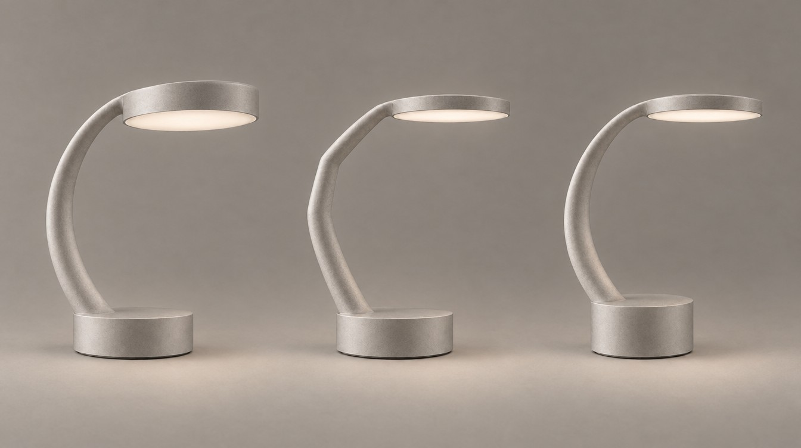
ERROR EXAMPLE · 의도적 오류 사례
A · 헤드가 두꺼워짐
B · 지지대 곡률이 바뀜
C · 베이스 비율이 달라짐
AI 이미지에서 생길 수 있는 불일치
01
지지대의 곡률이 달라짐
02
조명 헤드 두께가 달라짐
03
베이스 비율이 달라짐
04
연결 위치가 바뀜
05
소재가 달라짐
06
원본에 없는 부품이 추가됨
29
PART 04 — Multi-view Design
Hidden Side
DEFINE THE HIDDEN SIDE
기준 이미지 · 보이는 면
REAR VIEW — 학생이 정의
비어 있는 후면 스케치 영역
직접 정의할 내용
후면의 전체 형태
지지대 연결 위치
충전 포트가 필요한지
부품 분할선
제품의 깊이와 두께
원본에서 보이지 않는 부분을 AI가 임의로 결정하도록 두지 않습니다. 보이지 않는 부분도 디자인해야 합니다.
30
PART 04 — Multi-view Design
Sketch First
MULTI-VIEW REFERENCE SKETCH
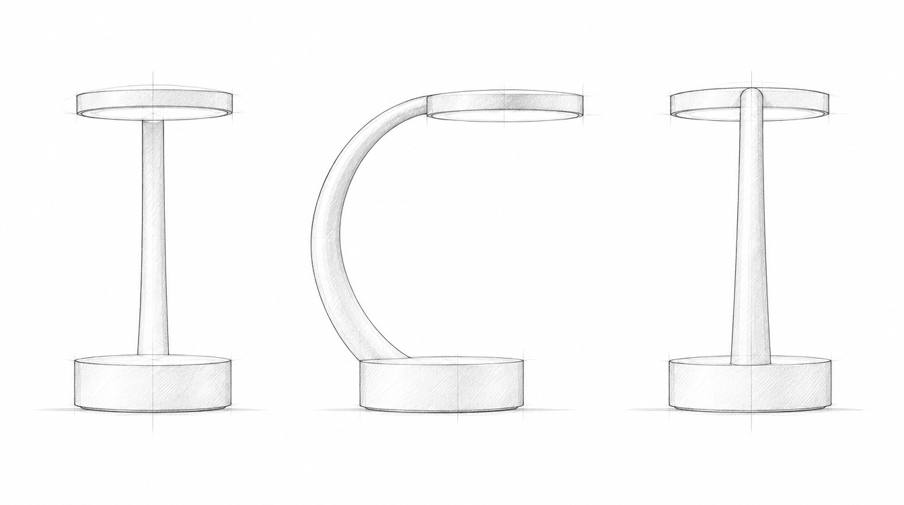
FRONT
전체 실루엣
SIDE
깊이와 곡률
REAR
후면 구조
TOP
필요한 경우 평면 형태
AI 이미지를 생성하기 전에 시점별 형태를 스케치로 정의합니다.
31
Practice 04
Multi-view Definition
시점이 바뀌어도 유지될 형태와 부품 구성을 정합니다.
수행 단계
1. Refined Concept 확인
2. Front View 스케치
3. Side View 스케치
4. Rear View 스케치
5. 시점별 유지할 형태·부품 표시
6. 보이지 않는 부분의 구조 결정
결과물
Multi-view Reference Sketch
완료 기준
시점이 달라져도 유지되어야 할
제품 형태와 부품 구성이 명확함
32
PART 05 — Visualization Direction
Design vs. Presentation
PRODUCT DESIGN vs VISUAL PRESENTATION
PRODUCT DESIGN
제품 자체를 결정하는 요소
형태 · 비율 · 소재
버튼 · 연결부 · 표면 마감
VISUAL PRESENTATION
제품을 보여주는 방식
카메라 시점 · 조명 · 배경
그림자 · 구도 · 이미지 분위기
좋은 이미지 연출이 제품의 디자인 문제를 해결해 주지는 않습니다.
33
PART 05 — Visualization Direction
Image Types
TYPES OF PRODUCT IMAGES
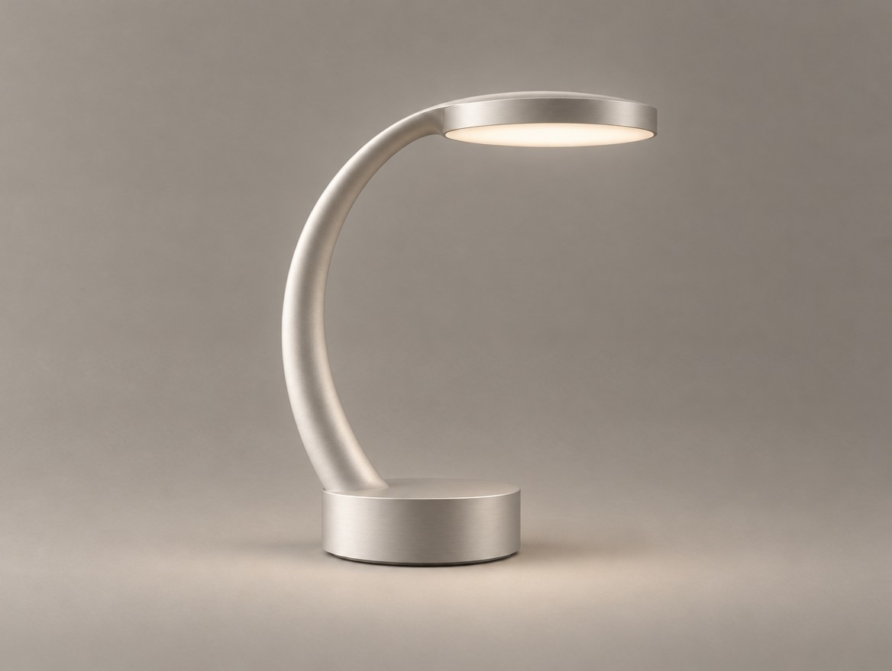
HERO VIEW
제품 전체를 소개하는 대표 이미지
DETAIL VIEW
핵심 디테일을 확대하는 이미지
MULTI-VIEW
시점별 형태를 확인하는 이미지
CMF VIEW
색상·소재·마감을 비교하는 이미지
이미지마다 보여줄 정보가 다릅니다. 목적을 먼저 정하고 이미지를 만듭니다.
34
PART 05 — Visualization Direction
Showing the Product
HERO IMAGE DIRECTION
Hero Image에서 확인할 요소
01
전체 실루엣
02
핵심 형태
03
소재와 마감
04
제품 비율
05
디테일의 완성도
06
이미지의 명확성
예시는 A안 CMF(Warm Silver · Satin)만 적용했습니다.
35
PART 05 — Visualization Direction
Plan First
VISUALIZATION DIRECTION SHEET
이미지 유형
목적
반드시 보여줄 요소
Hero View
제품 전체 소개
형태 · 비율 · CMF
Detail View 01
연결부 설명
Joint
Detail View 02
조작부 설명
Interface
Detail View 03
소재 경계 설명
Material Transition
Multi-view
시점별 형태 확인
Front / Side / Rear
CMF View
소재와 마감 비교
부품별 CMF
이미지를 생성하기 전에 어떤 정보를 보여줄 것인지 결정합니다.
36
Practice 05
Visualization Planning
다음 온라인 수업에서 만들 이미지와 조건을 정합니다.
수행 단계
1. Hero View의 목적과 구도 작성
2. 핵심 Detail View 3개 선정
3. Multi-view에 필요한 시점 결정
4. CMF 표현 기준 작성
5. AI가 변경하면 안 되는 조건 정리
결과물
Visualization Direction Sheet
완료 기준
다음 온라인 수업에서 제작할
이미지 목록과 표현 조건이
명확함
37
PART 06 — Review & Assignment
Final Board
PRODUCT DETAIL & CMF BOARD
01
FINAL FORM REFERENCE
2주차 Refined Concept 이미지
02
CMF DIRECTION
최종 색상·소재·마감 및 선택 이유
03
DETAIL DEFINITION
핵심 디테일 3개와 확대 스케치
04
MULTI-VIEW REFERENCE
Front / Side / Rear 스케치
05
VISUALIZATION DIRECTION
Hero / Detail / Multi-view 제작 계획
C자형 지지대 곡률
원통형 베이스 비율
얇은 수평 헤드
부품 상대 위치
06
DESIGN CONSTRAINTS
AI가 변경하면 안 되는 요소
최종 결과물은 새로운 제품 이미지가 아니라, 기존 제품을 구체화한 보드입니다.
38
PART 06 — Review & Assignment
Ready Check
FINAL DESIGN REVIEW
01
기준 제품의 형태가 확정되었는가?
02
CMF를 선택한 이유가 명확한가?
03
주요 부품의 소재가 정의되었는가?
04
중요한 디테일 3개가 결정되었는가?
05
후면과 측면의 형태를 설명할 수 있는가?
06
AI가 변경하면 안 되는 요소를 알고 있는가?
학생 실습
Product Detail & CMF Board를 최종 검토하고 부족한 부분을 보완합니다.
39
NEXT · WEEK 03 ONLINE · 선범쌤 · Higgsfield
NEXT — VISUALIZE THE DESIGN
01
CMF APPLICATION
확정된 CMF를 기존 제품에 적용
02
DETAIL VISUALIZATION
설계한 핵심 디테일 확대 이미지
03
MULTI-VIEW GENERATION
동일 제품의 시점별 이미지
04
CONSISTENCY CHECK
형태·부품·소재의 일관성 검토
05
HERO RENDERING
최종 제품 대표 이미지
Design the details.
Then visualize the decisions.
40